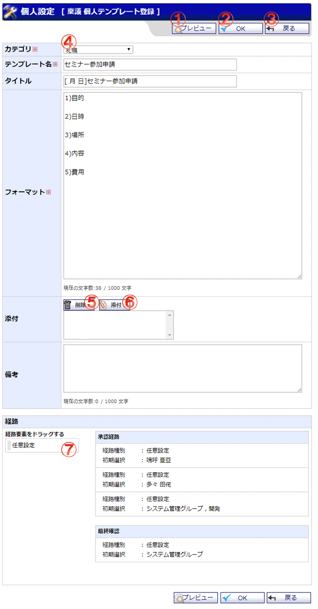

個人で使用する稟議テンプレートを登録する画面です。

機能説明
プレビューボタンプレビュー画面をポップアップで表示します。表示される画面は、この個人テンプレートを稟議申請時に使用した場合の画面となります。 |
OKボタン個人テンプレート登録確認画面へ遷移します。入力内容に不備がある場合エラーメッセージが表示されます。 |
戻るボタン遷移元の画面へ遷移します。 |
カテゴリコンボテンプレートの所属先カテゴリを選択します。 |
削除ボタン添付のリストで選択中の添付ファイルを削除します。 |
添付ボタン添付ファイル選択画面をポップアップで表示します。ファイルを選択し、確定すると添付のリストに選択したファイル名が追加されます。 |
経路要素経路要素を承認経路、最終確認にドラッグ＆ドロップすることで、このテンプレートを使用した場合に稟議が進行する経路を設定します。 |
表示・入力項目説明
テンプレート名
テンプレート名を入力します（100文字以内）。
タイトル
タイトルを入力します（100文字以内）。
フォーマット
フォーマットを入力します（1000文字以内）。
添付
ここで添付したファイルは、稟議作成時にダウンロードが可能です。
申請時にこのファイルが稟議に添付されることはありません。
備考
備考を入力します（1000文字以内）。